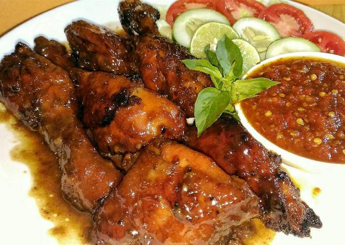

1. Ayam Bakar Madu

Bahan:
- 700 gr ayam, potong sesuai selera.
- 5-6 sdm kecap manis
- 1 sdm mentega
- 1 sdm gula merah sisir
- 1 sdm air asam jawa
- Air putih atau air kelapa secukupnya
- Garam, merica dan kaldu jamur secukupnya
- 2 lembar daun salam
- 1 batang serai geprek
- 1 ruas lengkuas geprek
- 4 lembar daun jeruk sobek-sobek
Cara Membuat:
- Cuci bersih ayam, beri perasan air jeruk nipis sisihkan.
- Tumis bumbu halus dan bumbu tambahan dengan minyak dan sedikit mentega sampai wangi dan benar-benar matang mengeluarkan minyak.
- Tambahkan gula merah, kecap dan air asam aduk sebentar.
- Masukkan ayam masak sampai kaku dan berubah warna.
- Tambahkan air sampai ayam agak terendam, beri garam, merica dan kaldu jamur secukupnya.
- Masak dengan api sedang cenderung kecil sambil ditutup sampai bumbu meresap dan air berkurang.
- Angkat ayam, lalu bakar di atas arang sambil dioles sisa bumbu yang dicampur dengan sedikit mentega.
- Sajikan dengan lalapan dan sambel sesuai selera.